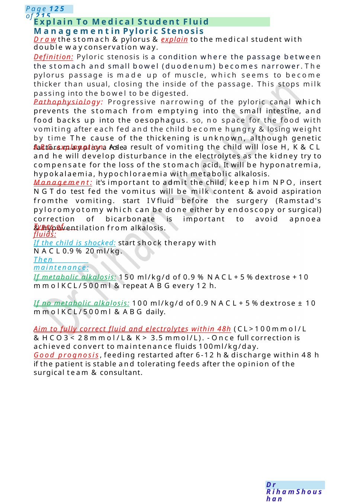
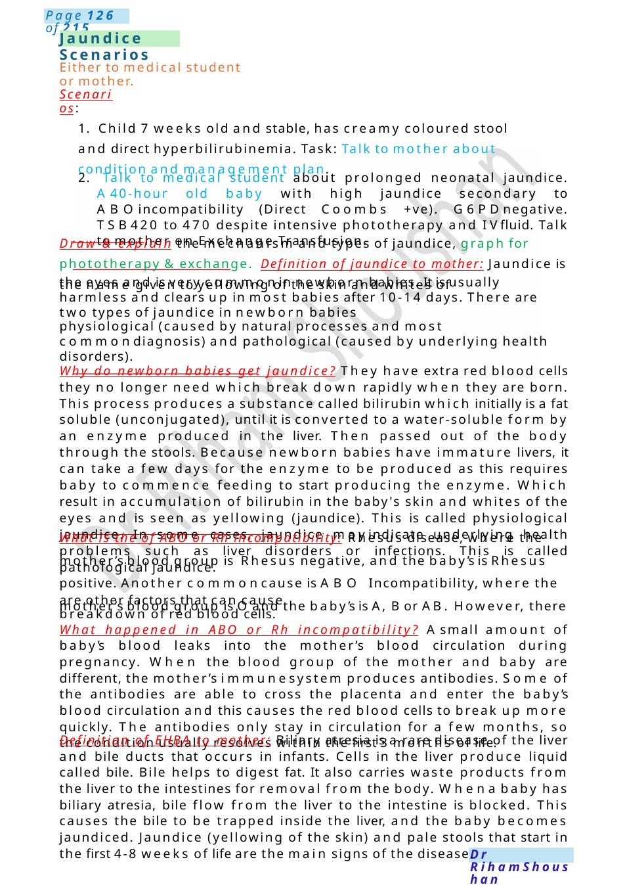

Explain To Medical Student Fluid Management in Pyloric Stenosis
Drawthe stomach &pylorus &explain to the medical student with double wayconservation way. Definition: Pyloric stenosis is a condition where the passage between the stomach and small bowel (duodenum) becomes narrower. The pylorus passage is made up of muscle, which seems to become thicker than usual, closing the inside of the passage. This stops milk passing into the bowel to be digested.
Scenario Summary
Drawthe stomach &pylorus &explain to the medical student with double wayconservation way. Definition: Pyloric stenosis is a condition where the passage between the stomach and small bowel (duodenum) becomes narrower. The pylorus passage is made up of muscle, which seems to become thicker than usual, closing the inside of the passage. This stops milk passing into the bowel to be digested.
Full Original Scenario

Explain To Medical Student Fluid Managementin Pyloric Stenosis
Drawthe stomach &pylorus &explain to the medical student with double wayconservation way.
Definition: Pyloric stenosis is a condition where the passage between the stomach and small bowel (duodenum) becomes narrower. The pylorus passage is made up of muscle, which seems to become thicker than usual, closing the inside of the passage. This stops milk passing into the bowel to be digested.
Pathophysiology: Progressive narrowing of the pyloric canal which prevents the stomach from emptying into the small intestine, and food backs up into the oesophagus. so, no space for the food with vomiting after each fed and the child become hungry &losing weight by time The cause of the thickening is unknown, although genetic factors mayplay a role.
ABG explanation: As a result of vomiting the child will lose H, K&CL and he will develop disturbance in the electrolytes as the kidney try to compensate for the loss of the stomach acid. It will be hyponatremia, hypokalaemia, hypochloraemia with metabolic alkalosis.
Management: it's important to admit the child, keep him NPO, insert NGTdo test fed the vomitus will be milk content &avoid aspiration fromthe vomiting. start IVfluid before the surgery (Ramstad's pyloromyotomy which can be done either by endoscopy or surgical) correction of bicarbonate is important to avoid apnoea &hypoventilation from alkalosis.
Types of fluids:
If the child is shocked: start shock therapy with NACL0.9 %20 ml/kg.
Then maintenance:
If metabolic alkalosis: 150 ml/kg/d of 0.9 %NACL+5%dextrose +10 mmolKCL/500ml &repeat ABGevery 12 h.
If no metabolic alkalosis: 100 ml/kg/d of 0.9 NACL+5%dextrose ± 10 mmolKCL/500ml &ABG daily.
Aim to fully correct fluid and electrolytes within 48h (CL>100mmol/L &HCO3< 28mmol/L& K> 3.5 mmol/L). - Once full correction is achieved convert to maintenance fluids 100ml/kg/day.
Good prognosis, feeding restarted after 6-12 h&discharge within 48 h if the patient is stable and tolerating feeds after the opinion of the surgical team &consultant.

Jaundice Scenarios
Either to medical student or mother.
Scenarios:
1. Child 7 weeks old and stable, has creamy coloured stool and direct hyperbilirubinemia. Task: Talk to mother about condition and management plan.
2. Talk to medical student about prolonged neonatal jaundice. A40-hour old baby with high jaundice secondary to ABOincompatibility (Direct Coombs +ve). G6PDnegative. TSB420 to 470 despite intensive phototherapy and IVfluid. Talk to mother on Exchange Transfusion.
Draw & explain the mechanism and types of jaundice, graph for phototherapy &exchange. Definition of jaundice to mother: Jaundice is the name given to yellowing of the skin and whites of
the eyes and is very commonin newborn babies. It is usually harmless and clears up in most babies after 10-14 days. There are two types of jaundice in newborn babies
physiological (caused by natural processes and most commondiagnosis) and pathological (caused by underlying health disorders).
Why do newborn babies get jaundice? They have extra red blood cells they no longer need which break down rapidly when they are born. This process produces a substance called bilirubin which initially is a fat soluble (unconjugated), until it is converted to a water-soluble form by an enzyme produced in the liver. Then passed out of the body through the stools. Because newborn babies have immature livers, it can take a few days for the enzyme to be produced as this requires baby to commence feeding to start producing the enzyme. Which result in accumulation of bilirubin in the baby's skin and whites of the eyes and is seen as yellowing (jaundice). This is called physiological jaundice. In some cases, jaundice mayindicate underlying health problems such as liver disorders or infections. This is called pathological jaundice.
What is the of ABO or Rh incompatibility: Rhesus disease, where the mother’s blood group is Rhesus negative, and the baby’s is Rhesus positive. Another commoncause is ABO Incompatibility, where the mother’s blood group is Oand the baby’s is A, Bor AB. However, there
are other factors that can cause breakdown of red blood cells.
What happened in ABO or Rh incompatibility? Asmall amount of baby’s blood leaks into the mother’s blood circulation during pregnancy. When the blood group of the mother and baby are different, the mother’s immunesystem produces antibodies. Some of the antibodies are able to cross the placenta and enter the baby’s blood circulation and this causes the red blood cells to break up more quickly. The antibodies only stay in circulation for a few months, so the condition usually resolves within the first 3 months of life.
Definition of EHBA to mother: Biliary atresia is a rare disease of the liver and bile ducts that occurs in infants. Cells in the liver produce liquid called bile. Bile helps to digest fat. It also carries waste products from the liver to the intestines for removal from the body. Whena baby has biliary atresia, bile flow from the liver to the intestine is blocked. This causes the bile to be trapped inside the liver, and the baby becomes jaundiced. Jaundice (yellowing of the skin) and pale stools that start in the first 4-8 weeks of life are the main signs of the disease.